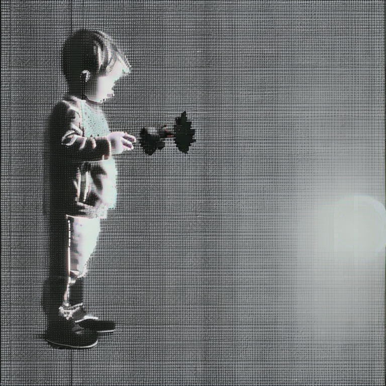
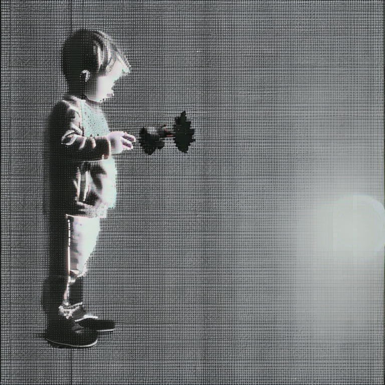

- 1. historical-context
- 2. inspiration
- a
- a
- a
- a
historical context:
In 1935, the German philosopher Walter Benjamin published his essay ‘The Work of Art in the Age of Reproduction’, reflecting on the impact of the mechanical reproduction of images on the aura of art and questioning notions of originality and authenticity. As a response to the digital age, Hito Steyerl expanded on this discourse in 2009, examining the digitisation and movement of images within the digital space. He highlighted the transformative potential of ‘poor images’, low-resolution images liberated from traditional archives.
Situated within this theoretical frame of reference, this research will attempt to apply and elaborate image theory within its new context vis-à-vis artificial intelligence. With the research I want to respond to the decoupling of the photographic image from the medium of photography, emphasising its birth from algorithms rather than traditional media. In particular, it will address the issue of the ‘poor image’ in the age of image generation by artificial intelligence.
We see the poor image not only as a low-resolution image, but as an image with a certain hierarchy within the image-constructed society. As Steyerl describes, it represents the ‘trash that washes up on the shores of digital economies’, perpetually circulating in ‘underground’ circles, where viewers simultaneously assume the role of consumer (the one who views the image) and producer (the one who downloads, crops, changes and distributes the image).
The incorporation of the recent democratisation and rise of artificial intelligence into this dynamic introduces the potential for a profound change in this image culture. From databases on databases of poor images (a visual format that, according to Wasielewski, allows for optimised classification for machine learning, eliminating excess detail that would result in ‘overfitting’) to synthesise high-resolution photorealistic representations, reshaping our understanding of the creation and consumption of visual media.
Within the field of poor imagery there are a multitude of topics and directions to explore. In this research, my primary focus will be on the influence of artificial intelligence in this context, seeing it as the most significant recent change in content creation. However, I will also address social and political issues, such as the poor image in the context of memes and in relation to surveillance (with the help of sources such as Harun Farocki), with the aim of providing a relatively comprehensive analysis of the topic.
inspiration:

src: hang gao
src: thomas ruff's jpeg series

src: slanted #37

src: harun farocki's eye/machine

src: harun farocki's operational images
src: unlicensed, bootlegging as a creative practice
src: unlicensed, bootlegging as a creative practice
link to are.na board with more sources of inspiration
↑ back up
primary:
in terms of primary research, my main source has been (so far) to investigate different AI models of image generation in order to observe their creation of poor images. i consulted the following models: stable diffusion, bing ai & leonardo ai. i tried three different messages, chosen to receive a variation of images and descriptors, and compared them:


 



another branch of the primary research I did based on one of the classes was a survey showing various images of landscapes, some AI generated, some low quality, and some normal. based on these images I asked the public which one they thought was more realistic, and what feeling each image gave them. I ended up not publishing this survey as at the time I didn't think it would help me that much in the research.

secundaria:
1. in the defense of the poor image (hito steyerl, articulo, 2009)
2. operational images: from the visual to the invisual (jussi parikka, libro, 2023)
3. authenticity and the poor image in the age of deep learning (amanda wasielenski, paper, 2023)
mind-mapping:
notebook:


↑ back up
- 1. question
- 2. hypothesis
- a
- a
- a
- a
question:
1 what is the importance of the low-quality image in an image-dependent society, 2 and how does this relate to the democratisation of the high-quality image through artificial intelligence?
hypothesis:
In an image-dependent society, low-quality images take on a subversive meaning that challenges dominant narratives. As artificial intelligence democratises the high-quality image, a complex dynamic emerges; on the one hand, the gap between high-quality and low-quality images widens, yet on the other hand it narrows as AI-generated images are born from the ashes of poor images. I see that the low quality image could subvert the power of AI over the reality of images, as it lacks the ability to generate this kind of visual quality. On the other hand this also depends on the consumer, as a poor image is not only born from an aesthetic, but from a journey.
↑ back up